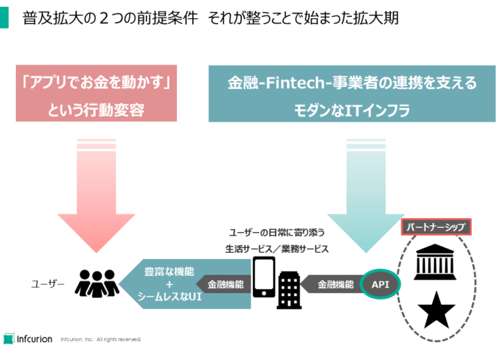
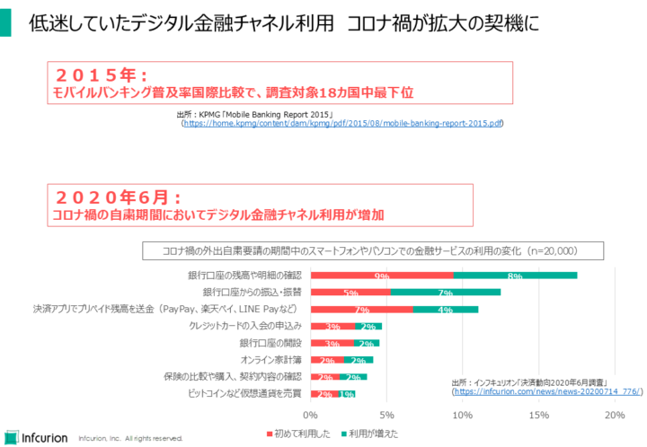
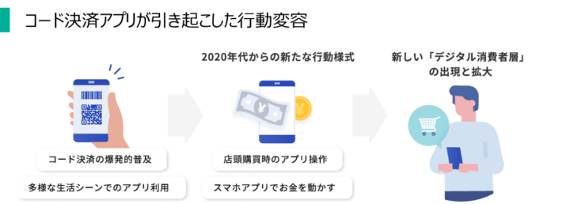
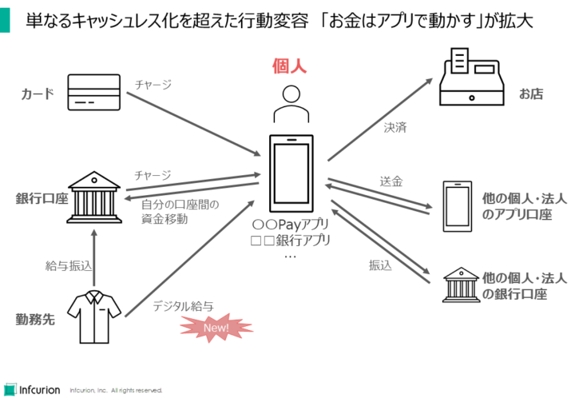
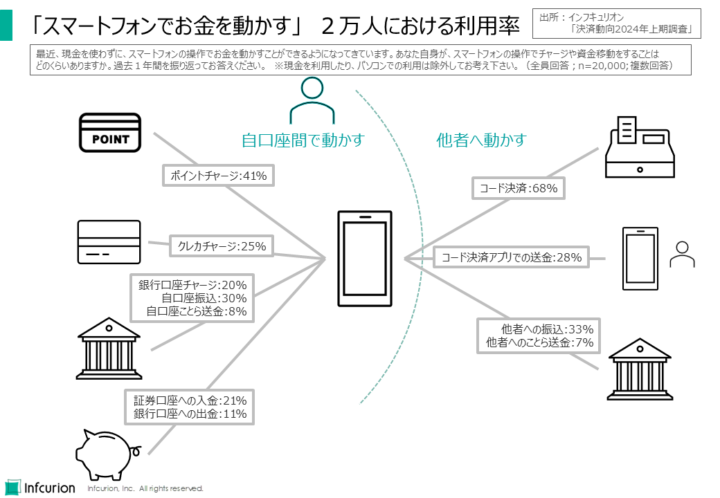
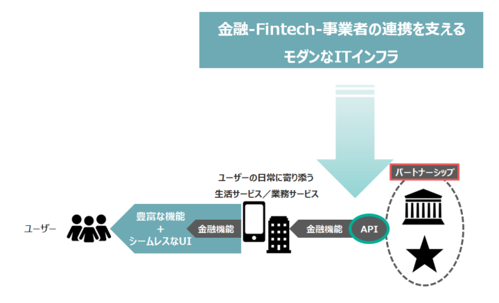

２０２５年フィンテックを展望するシリーズ第二弾です。前回記事では、Embedded Finance（組み込み型金融）の普及がマス層によるフィンテック利用を拡大してゆくというトレンドを、「フィンテックが日常に溶け込む」という表現で解説しました。
いままさに進行しているフィンテック普及拡大には、２つの大きな前提条件が整ったことが大きく作用しています。「アプリでお金を動かす」というユーザー側の行動変容、そして金融領域での企業間連携を支えるモダンなITインフラの普及です。今回は、個人市場におけるフィンテックの飛躍の土台となったこの２つのトレンドについて解説していきます。（法人市場については次回で取り上げます。）

普及拡大の２つの前提条件 それが整うことで始まった拡大期
目次
「アプリでお金を動かす」が当たり前に
Embedded Finance型のサービスがユーザーに受け入れられるためには、「スマートフォンやPCを操作してお金を動かす」という行動が、違和感のない自然なものとなっていることが大前提です。
現在ではコード決済アプリでの支払いやチャージ（入金）、銀行アプリを使った振込みなど、スマートフォンを操作してお金を動かすというのは当たり前の行動として浸透していますが、ほんの数年前はそうではありませんでした。個人ユーザーがEmbedded Financeを受け入れる土壌が整ったのは比較的最近のことなのです。
コロナ禍が金融デジタルチャネル利用を後押し
コード決済アプリの雄・PayPayがサービスを開始したのは2018年。それ以前の日本では、お金を扱えるスマートフォンアプリといえば銀行が提供するモバイルバンキングアプリくらいしかありません。ですが、当時、日本のモバイルバンキングの普及率は極めて低い水準にありました。
たとえば、KPMGによる2015年のモバイルバンキング普及率の国際比較において、日本は調査対象18カ国中最下位でした。
出典：KPMG、「Mobile Banking Report 2015」
大きな転機となったのは2020年のコロナ禍です。インフキュリオンが2020年6月に実施した調査において、コロナ禍の自粛期間中にスマートフォンで金融サービス利用が増加したことが観測されました。外出自粛要請によって、スマートフォンやパソコンでの金融サービスの利用が増えたのです。これまで一部のアーリーアダプター層にとどまっていたモバイルバンキングが、より幅広い層に浸透しはじめたのです。
出典：インフキュリオン・インサイト、「外出自粛での買い物と金融のデジタルサービス拡大 ～決済動向６月調査～

低迷していたデジタル金融チャネル利用 コロナ禍が拡大の契機に
コード決済アプリが引き起こした行動変容
コード決済アプリの爆発的な普及も、個人の行動変容を強く後押ししました。店頭レジでアプリを操作して決済する、という新しい行動を広めただけではありません。アプリにクレジットカードや銀行口座を登録し、スマートフォンの操作でそこからアプリにチャージ（入金）する、という、これまでになかった「スマホアプリでお金を動かす」という行動を一般のマス層ユーザーに広く浸透させることになりました。

コード決済アプリが引き起こした行動変容
コード決済アプリの普及は、単なるキャッシュレス化を超えた行動変容を引き起こしました。 「お金はアプリで動かす」という考え方が広がり、スマートフォンで様々な金融サービスを利用する人が増えています。ランチ会などの精算をコード決済アプリの送金機能で完了する、銀行アプリを操作して振込をする、などがその例です。

単なるキャッシュレス化を超えた行動変容 「お金はアプリで動かす」が拡大
そして現在、スマートフォンでお金を動かすという行動は、様々なシーンで見られるようになっています。 例えば、個人間の送金、銀行口座への入金、証券口座への入金など、様々な金融取引をスマートフォンで行うことができます。
インフキュリオン独自の「決済動向2024年上期調査」では、全国の男女2万人を対象に「スマートフォンの操作でお金を動かす」という行動の広がりを調査しました。下の図にその結果をまとめています。

「スマートフォンでお金を動かす」 2万人における利用率
スマートフォンでの決済や送金の利用率は以下でした。かなり広く浸透していることがわかります。
- コード決済：68%
- コード決済アプリでの送金：28%
- スマートフォン操作による他者への振込：33%
スマートフォン操作によるチャージ（入金）の利用率は以下です。これは、チャージ先のアプリを利用していない人も母数に含まれています。もし母数をコード決済アプリなどチャージ先アプリ利用者に限定すると、利用率はさらに高いものとなることになります。
- ポイントチャージ：41%
- クレカチャージ：25%
- 銀行口座チャージ：20%
スマートフォンでお金を動かすという行動は、今後もますます広がっていくでしょう。それは、個人ユーザーがEmbedded Finance型のサービスを歓迎し、利用を拡大していく条件が整ったことを意味します。個人マス層によるフィンテック利用はついに拡大期に入ったと考えます。
モダンなITインフラによる企業間連携
個人マス層がフィンテックを受け入れる素地が整っただけではフィンテックの飛躍は望めません。自然な利用導線と高い利便性で個人ユーザーに訴求できるような、高品質なフィンテックサービスが続々と登場していってこそ、フィンテック利用拡大が実現するのです。
Embedded Financeの利点は、自然な利用導線と高い利便性にありますが、それを単独企業で担うのは困難です。求められるのは、「ユーザーの日常に寄り添う生活サービスを提供するBtoC事業者」、「安心してお金を預けられるという信頼感のある金融事業者」、さらには「先端的テクノロジーで斬新なサービスを創出するフィンテック企業」といった複数の企業の連携です。

金融・Fintech・事業者の連携を支えるモダンなITインフラの普及
また、ユーザーから見たシームレスなUIは、夜間バッチでは実現できません。API（Application Programming Interface）を介した即時性の高いシステム間連携が必須となります。
API自体はIT業界で数十年前からあるものですが、金融業界での活用は進んでいませんでした。日本のフィンテック時代が始まった2015年以降、徐々に活用事例が増えていきました。2018年施行の改正銀行法で、銀行等にオープンAPI導入に係る努力義務が課せられたことも大きなプラスでした。金融事業者が、持てる金融機能をAPI経由でパートナー企業に提供する「BaaS（Banking-as-a-Service）」の事例も今では少なくありません。
インフキュリオン・インサイトの関連記事：
- 「PSD2と銀行APIによるサービス開発動向」、2019年1月25日
- 「BaaS（Banking as a Service）とは？ ゴールドマン・サックスの事例」、2020年11月8日
- 「『BaaS + Embedded Finance』による生活・ ビジネス両分野での革新」、2022年1月24日
2024年は金融事業者と非金融事業者の連携によるフィンテックサービスが多数登場した年でした。異業種連携を支えるモダンなITインフラの普及が、フィンテックサービス創生を活性化していることを示しています。以下のような事例です：
- 楽天銀行とJR東日本による「JREバンク」（https://www.jrebank.jp/top/）
- KyashとGeNiEによる「Kyashスポットマネー」（https://prtimes.jp/main/html/rd/p/000000008.000132069.html）
- Finswerと北國銀行による「Finswer Bank」（https://finswer-bank.finswer.jp/）※事業者向けフィンテックサービス
- アプラス「BANKIT」が「ことら送金」を実装予定（プレスリリース）
社会とテクノロジーの条件が揃い、Embedded Financeの実装が本格化
振り返ってみると2024年は、マス層向けのフィンテックサービス提供が本格化した年でした。企業間連携によるEmbedded Financeの社会実装が金融サービスの主流に躍り出たと言えます。
今回見てきたとおり、この現在進行中のメガトレンドは、「アプリでお金を動かす」というユーザー側の行動変容、そして金融領域での企業間連携を支えるモダンなITインフラの普及という２つの前提条件が成立したことで始まりました。そしてこのメガトレンドはもう後戻りすることはありません。
2025年は、自然な利用導線と高い利便性を持ったフィンテックサービスが浸透し、ユーザーの日常に溶け込んでゆく年です。


{kind=link}
{kind=link}
{kind=link}
{kind=link}
{kind=link}
{kind=link}